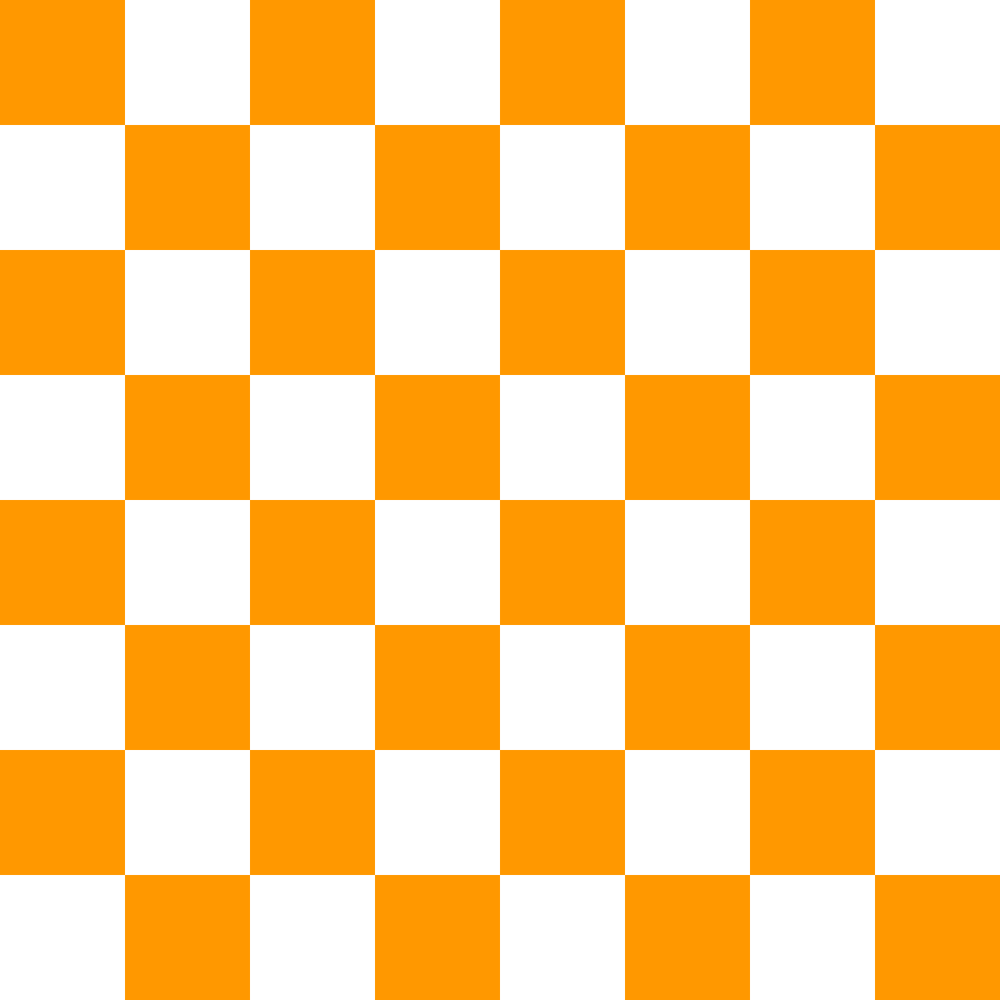
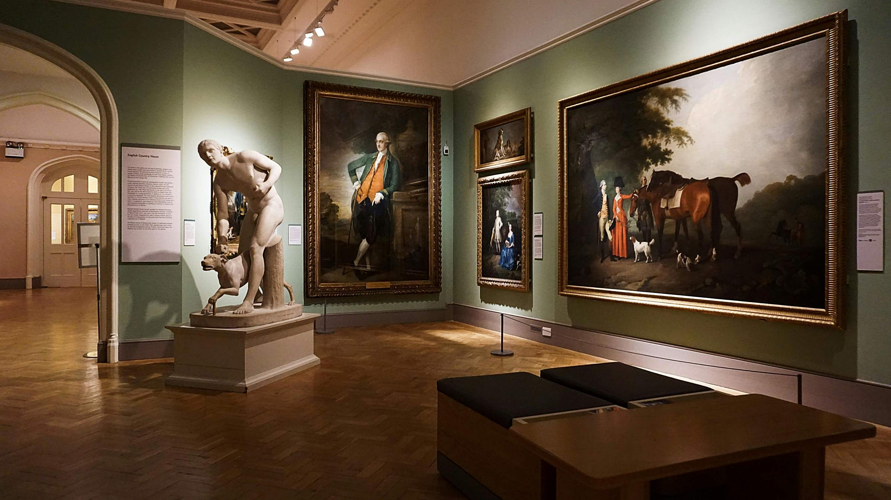

Curator's Note: Why We Are Keeping the Lights Low
A brief explanation of conservation efforts and atmospheric intent in our galleries.
Visitors to the ФЭС Foundation often remark on the subdued lighting within our exhibition spaces. While some might find it initially challenging, this decision is a carefully considered blend of essential conservation practice and an intentional atmospheric choice, particularly relevant to the delicate nature of the works we display.
Preserving Fragile Histories
Many of the artworks and archival documents housed within the Foundation are incredibly fragile, susceptible to degradation from light exposure. Pigments can fade, paper can become brittle, and inks can deteriorate over time when exposed to excessive ultraviolet (UV) and even visible light.
By maintaining a lower light level, especially within our galleries dedicated to historical documents and works on paper—such as those by Louis Wain and our newly acquired Richard Dadd diaries—we significantly reduce the rate of this photochemical damage. This allows us to preserve these invaluable pieces for generations to come, ensuring their stories and artistic brilliance remain accessible to future scholars and the public.
An Atmosphere of Reflection
Beyond conservation, the dimmed lighting serves another crucial purpose: it enhances the visitor experience by fostering an atmosphere of introspection and intimacy. Many of the artists featured in the ФЭС Archive explored profound and often unsettling aspects of the human psyche. Their works were not always intended for bright, conventional viewing.
The reduced illumination encourages visitors to slow down, to focus intently on the details, and to engage more deeply with the nuances of each piece. It creates a quiet, almost reverent space that aligns with the often-introspective nature of the art itself, inviting a more personal and contemplative dialogue between the viewer and the artwork.
"In the subtle shadows, the true essence of these visionary artists often reveals itself, speaking volumes in whispers rather than shouts." — Dr. Elara Vance
We believe that by carefully controlling the light, we not only protect our precious collection but also provide an environment where the profound depth and complexity of the human mind, as interpreted through art, can be truly appreciated.